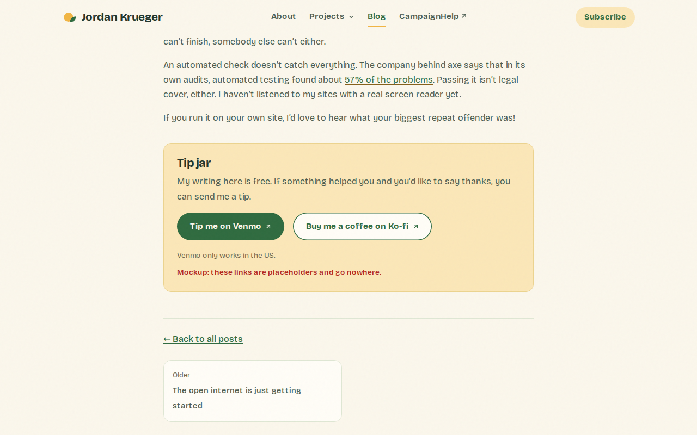
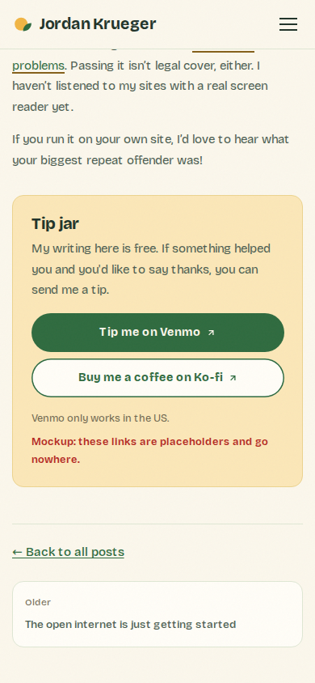
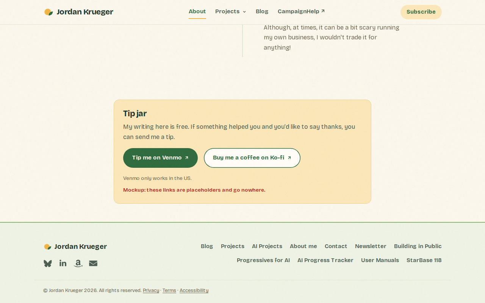
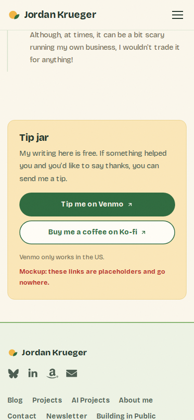
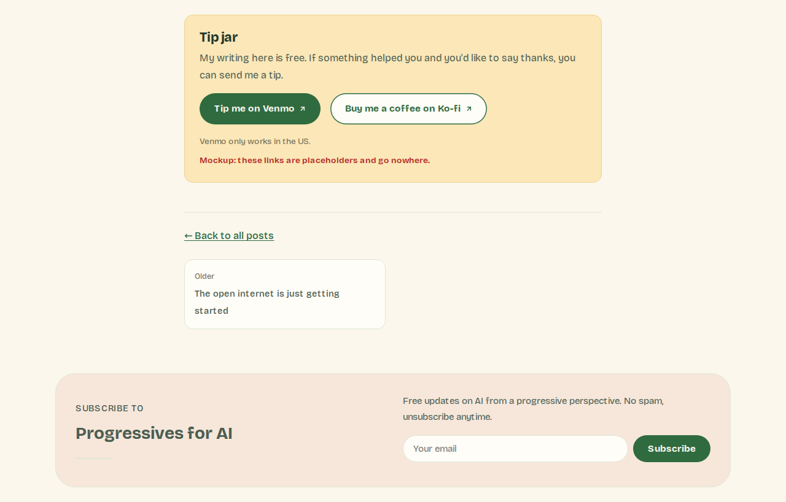
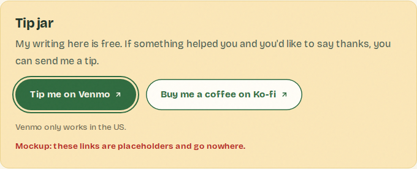

Tip jar for jordankrueger.com
Research and mockup, 2026-11-28. Branch tip-jar. Nothing is merged, pushed or deployed, and no accounts were created.
Decisions Jordan needs to make
- Which service.
- A. A direct Venmo link plus a Ko-fi page (recommended, and what the mockup shows). Two plain links.
- B. Ko-fi only. One button. Third-party sites say Ko-fi takes Venmo through PayPal, so this may be all you need. I could not confirm that on Ko-fi's own pages, so check it first.
- C. A direct Venmo link plus Buy Me a Coffee. Choose this only if you want that brand. It costs more per tip.
- Your Venmo link, and which kind of profile. Send the link copied from the app. A personal profile is free to receive on, but Venmo limits business use of personal profiles, and nothing I read says how it treats a thank-you tip. A business profile costs 1.9% + 10¢ and is the cautious choice. Details are under Venmo rules.
- Your coffee page URL. You would need to create the Ko-fi (or Buy Me a Coffee) page yourself.
- Where on the site. The mockup puts the box in two places: the end of every blog post (35 posts today) and the bottom of the About page. You can keep both, keep one, or use a small footer link instead.
- Wording. Approve or change the text under Copy.
Short answers
- Does Buy Me a Coffee take Venmo? I found no sign that it does. Its help center FAQ says "We accept all major Credit Cards, Apple Pay, and Google Pay." Venmo appeared on none of the help pages I read. Its main-site FAQ and pricing pages refused automated fetches, so I did not read those.
- Does any coffee-style widget take Venmo? Ko-fi's page does, through a connected PayPal account, for US supporters, according to Best Creator Platforms and Owelet (Owelet does not mention the US limit). Both are third-party sites.
- Do we need a third-party script? No. Plain links do the job. The security policy (CSP) stays as it is.
Recommendation
Use two plain links: "Tip me on Venmo" and "Buy me a coffee on Ko-fi." No widget, no script, no embed.
Why a direct Venmo link and not only Ko-fi:
- It is certain to be Venmo. Ko-fi's Venmo option depends on a PayPal connection, and Owelet says Ko-fi picks which payment options to show based on the supporter's device and location.
- It costs less: free on a personal profile, or 1.9% + 10¢ on a business profile (Venmo fees).
Why Ko-fi and not Buy Me a Coffee:
- Buy Me a Coffee takes a 5% platform fee plus card processing.
- Ko-fi takes 0% on one-time tips if you turn off its "Standard" setting (one source calls it "Contributor"). New accounts start with it on, which means 5% (Lilach Bullock, Best Creator Platforms, Owelet; all third party).
Why plain links and not a widget:
- A link works with a keyboard and a screen reader without any extra work.
- No new script, no CSP change, no new cookie.
- I read Buy Me a Coffee's floating widget script. Its button is a
divwith mouse and click handlers. It sets notabindex,roleorariaattribute and has no key handlers, so as written a keyboard user cannot reach or open it. I read the code; I did not run it.
When to pick B instead: if you open your finished Ko-fi page on a US phone, see Venmo offered, and would rather have one button. Set VENMO_URL to '' and the Venmo button and its note disappear.
Comparison
Money
"Left from $5" is my arithmetic from the linked rates, for a one-time US tip, before any bank transfer fee.
| Option | Venmo from supporters? | Fees | Left from $5 | How you get paid |
|---|---|---|---|---|
| Buy Me a Coffee | Not found | 5% + Stripe 2.9% + 30¢; +1% outside the US. The same page also mentions a 0.5% payout processing fee | about $4.30 | Stripe, then your bank. $10 minimum; first payout is reviewed |
| Ko-fi | Yes, via PayPal, US (third party) | 0% on one-time tips with "Standard" off, plus processor fees of about 3% + 30¢ (third party) | about $4.55 | Straight into your PayPal or Stripe (third party) |
| PayPal Donate button | Seen on 9 of 9 nonprofit donate pages (third party); not confirmed for individuals | 2.89% + 49¢ | about $4.37 | PayPal balance; standard bank withdrawal is free |
| PayPal.me link | Not found | Friends and family: free to receive, but that category excludes donations and commercial payments | depends on how the payment is classed | PayPal balance |
| Stripe Payment Link | Not found. Not among the listed methods in the part I read | 2.9% + 30¢ | about $4.55 | Your bank; first payout typically 7–14 days |
| Venmo link or QR, personal profile | Yes | Free; 2.99% if the sender marks it goods and services | $5.00 (about $4.85 if marked) | Venmo balance; standard transfer free, instant 1.75% |
| Venmo link or QR, business profile | Yes | 1.9% + 10¢ | about $4.80 | Same as above |
Notes:
- Buy Me a Coffee lets you choose whether you or the supporter covers the card fee. By default it comes out of your earnings.
- The PayPal fee file is dated February 19, 2026. PayPal's web fee pages refused automated fetches, so check for a newer one.
- A competitor's guide says a Donate button needs a PayPal Business account. PayPal's Donate developer page sends you to your account to check eligibility.
- Stripe allows tips only for a good or service already provided, such as content. It does let customers choose the amount.
- PayPal's Pay with Venmo button is for a checkout built with PayPal's JavaScript, US only, and needs the Venmo app. It is more than a tip jar needs.
Your website
| Option | Plain link works? | Third-party script if you embed | CSP change if you embed | Widget accessibility |
|---|---|---|---|---|
| Buy Me a Coffee | Yes | cdnjs.buymeacoffee.com widget |
script-src cdnjs.buymeacoffee.com; img-src and font-src cdn.buymeacoffee.com; frame-src www.buymeacoffee.com (read from the script) |
No statement found. Floating button is not keyboard operable in the script I read |
| Ko-fi | Yes (your page has its own address) | The floating widget uses two script tags, including overlay-widget.js, per a third-party wrapper project. Script address not checked |
Not checked; it would need Ko-fi script and frame sources | Not checked |
| PayPal | PayPal.me is a shareable link | paypalobjects.com/donate/sdk/donate-sdk.js for the SDK button |
At least script-src www.paypalobjects.com; full list not checked |
No statement found |
| Stripe | Yes | js.stripe.com/v3/buy-button.js |
script-src and frame-src js.stripe.com |
No statement found |
| Venmo | Yes, a link or a QR image from the app | None | None | A link is native; a QR image would need alt text and the link beside it |
With a plain link, the visitor's data goes to the service only after they click. A widget or embed loads from the service on every page that carries it, so the privacy page would need to say so. The Buy Me a Coffee script also sets a visited cookie.
Venmo rules to know first
- Venmo is US only and needs a US bank account. That is why the second link matters: it covers people who pay by card.
- The user agreement says personal accounts "may not be used to conduct business, commercial or merchant transactions" unless Venmo authorizes it, for example when the sender marks the payment as goods and services.
- Venmo's help center says: "Personal profiles should not be used to receive funds for user-created donation campaigns or non-profits." So the copy never says "donate".
- Nothing I read says whether a thank-you tip for free writing counts as a personal payment or a commercial one. That is your call, or a question for Venmo support.
- A business profile works for individuals and sole proprietors, can use your SSN or ITIN if you have no EIN, and is subject to fees and tax reporting. It also has an optional tipping setting. I did not research taxes beyond this.
- Venmo's default privacy setting is public. Check yours.
Where it fits on the site
| Place | File | In the mockup | Notes |
|---|---|---|---|
| End of each blog post | src/layouts/BlogPost.astro, after the bottom discussion bar |
Yes | Reaches people who just got something from you. The newsletter box still follows lower down, so there are two asks. RSS is unaffected because src/pages/rss.xml.js renders only the post body |
| Bottom of About | src/pages/about.astro, after the timeline |
Yes | Quieter. It sits below a long timeline |
| Footer link | src/components/Footer.astro, .footer-links |
No | Every page, very low-key. Would need a target such as /about#support, which means adding that id |
| Homepage | src/pages/index.astro |
No | Not recommended. The page sells your two practices and the book |
The blog box has no per-post off switch. If some posts should not ask for tips, that needs a frontmatter field like the existing hideNewsletter.
What changes: CSP and privacy page
CSP (public/_headers): no change. The current policy limits what the page loads; it does not limit where links go. The site's Referrer-Policy of strict-origin-when-cross-origin means Venmo or Ko-fi see only that the visitor came from your domain, not which page.
Privacy page (src/pages/privacy.astro): edited on the branch, for you to approve.
- New bullet under "What I collect": "Tips. The tip links take you to Venmo or Ko-fi. You pay there, not on this site, and their privacy policies apply. I can see what they pass along to me about your tip, such as your name and any note you write."
- "The short version" now reads: "...and I only get personal details you choose to send, like through the newsletter box, the contact form, or a tip."
- "Last updated" is now November 28, 2026. Change it to the day you publish.
Terms page: not changed. Add a line about tips only if you want one.
Separate gap I noticed, not fixed: the privacy page does not mention the postcard form on /2076, although functions/api/postcards.js stores the name, place and answers that people send. Its line about nothing sitting in a database "beyond a newsletter email or a message you sent me" does not clearly cover postcards.
Copy
Tip jar (heading)
My writing here is free. If something helped you and you'd like to say thanks, you can send me a tip.
[Tip me on Venmo] [Buy me a coffee on Ko-fi]
Venmo only works in the US.
The humanizer skill was not installed on the machine that ran this, so I edited the copy by hand. Run it before publishing if you want that pass.
Screenshots
Taken from the production build with all outside requests blocked, so the newsletter's bot check does not appear. The red "Mockup" line shows only while a link is a placeholder.
End of a blog post, desktop (1280 px wide)

End of a blog post, phone (390 px wide)

Bottom of About, desktop

Bottom of About, phone

How the tip box and newsletter box stack on a post

Keyboard focus

What was checked
npm run buildsucceeded. The box appears on 35 blog post pages and on About, and not inrss.xml.node scripts/check-contrast.mjspassed.- In headless Chromium on both pages at both widths: no sideways scrolling; Tab reaches the Venmo link, then the Ko-fi link, each with a 2 px focus outline; both links are 48 px tall or more.
- An axe scan limited to the tip box reported no violations.
- Not done: listening with a real screen reader, testing on a real phone, and any test of a real Venmo or Ko-fi link.
Before it can go live
- Create the accounts you chose. For Ko-fi: connect PayPal (needed for Venmo) and turn off "Standard".
- In
src/components/SupportLinks.astro, replace the two placeholders:VENMO_URL:https://example.invalid/YOUR-VENMO-PROFILE-LINKKOFI_URL:https://example.invalid/YOUR-KOFI-PAGE
- Copy the Venmo link from the app rather than typing it. A third-party guide gives the path as profile picture, "Share Profile", then the copy icon.
- Open both links on a phone and on a computer. I could not find out from Venmo what a computer visitor sees. If it is not useful, add your Venmo QR image next to the button.
- If you choose Buy Me a Coffee, change the second button's label in the component and "Ko-fi" in the privacy bullet.
Do not merge the branch while either placeholder remains. Placeholder links go nowhere (.invalid is a reserved domain), so no money can reach a stranger by mistake.
What I could not verify
- Ko-fi's own pages returned "403 Forbidden" to automated fetches, so every Ko-fi claim here comes from third parties. Open these yourself before deciding: payment methods and pricing. I have not read either.
- Whether Ko-fi needs a PayPal Business account to offer Venmo.
- Whether PayPal.me offers Venmo to the person paying.
- Whether a tip on a personal Venmo profile is allowed.
- The Venmo link format and what it does on a computer.